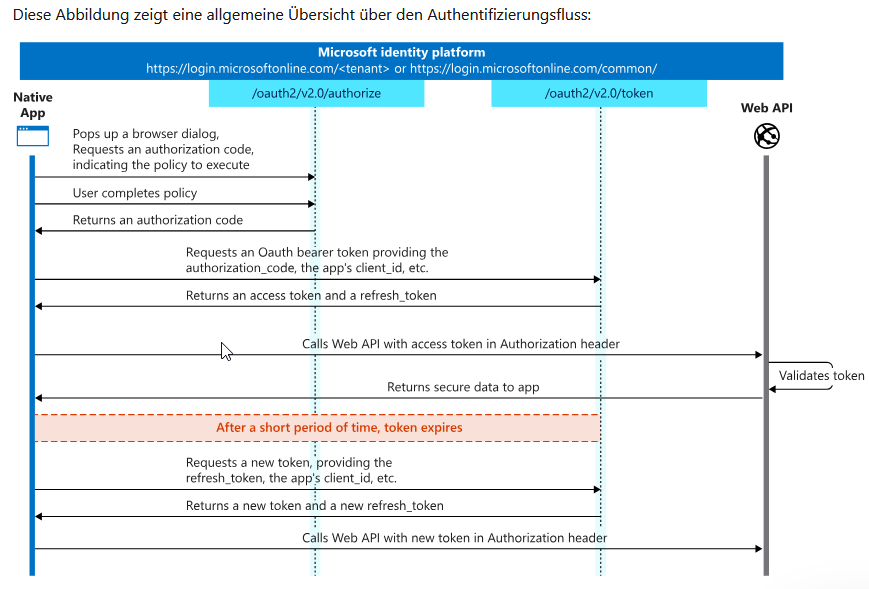

Bedingter Zugriff in Microsoft Entra ID
Richtlinien für den bedingten Zugriff in Microsoft Entra ID basieren auf einer einfachen if-then-Logik:
- Wenn ein Benutzer auf eine Ressource zugreifen möchte,
- dann muss er eine bestimmte Aktion ausführen.
Beispiel für bedingten Zugriff
Ein Leiter der Lohnbuchhaltung möchte auf eine Power Apps-Anwendung zugreifen, die für die Lohnbuchhaltung genutzt wird. Um den Zugriff zu gewähren, muss er eine mehrstufige Authentifizierung (MFA) durchlaufen.
Ziele von Administratoren- Produktivität ermöglichen: Benutzer sollen überall und jederzeit arbeiten können.
- Organisationsressourcen schützen: Sicherheitsmaßnahmen müssen gleichzeitig die sensiblen Daten und Systeme der Organisation schützen.
Funktionsweise von Richtlinien für den bedingten Zugriff- Diese Richtlinien helfen Administratoren, situationsabhängig Sicherheitsmaßnahmen zu ergreifen.
- Ziel ist es, Benutzer nur dann zu behelligen, wenn es notwendig ist.
- Richtlinien greifen erst nach der Erstfaktorauthentifizierung.
Wichtige Einschränkungen- Nur globale Administratoren können Richtlinien für den bedingten Zugriff konfigurieren.
- Power Platform- oder Dynamics 365-Administratoren haben keinen Zugriff auf diese Funktionalität.
Bedingter Zugriff ist ein leistungsstarkes Werkzeug, um den Spagat zwischen Sicherheit und Benutzerfreundlichkeit zu meistern